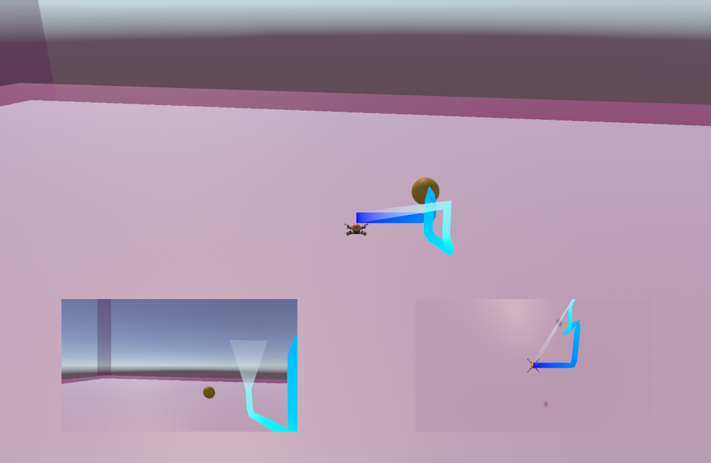
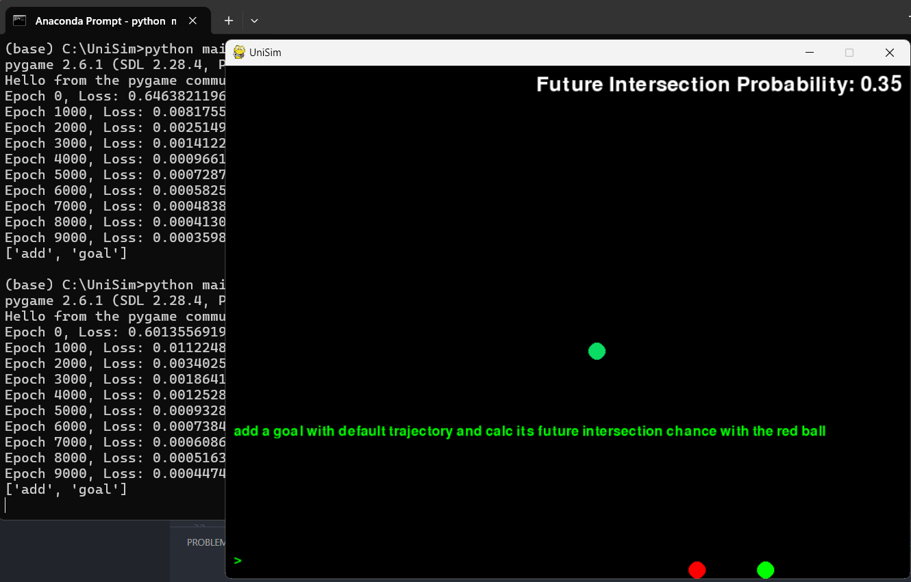
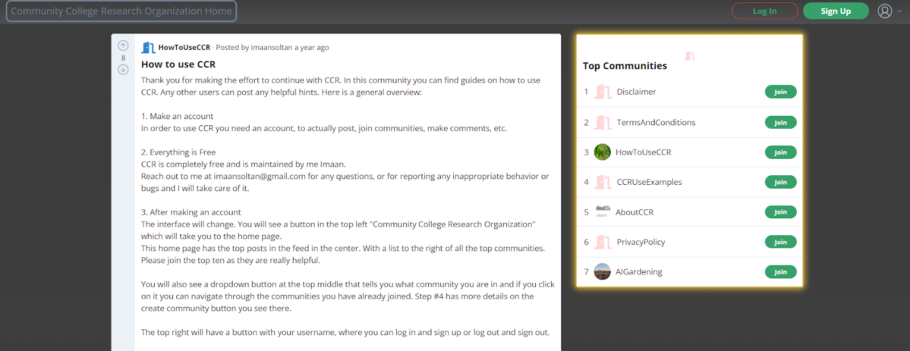

Light Mode
Projects and Links
About Me
IMAAN SOLTANALIPOUR
AI-ML Multi-Modal Text and Image Analysis System
Click for Details
Self-Flying Drone Simulation with Unity ML-Agents

Click for Details
Artificial Intelligence and Machine Learning Physics Simulator

Click for Details
Founder of Community College Research Organization Startup

Click for Details
Handshake
LinkedIn
GitHub
×
❮
❯